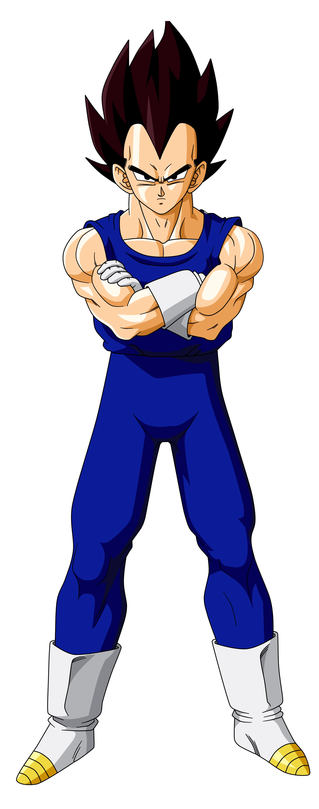
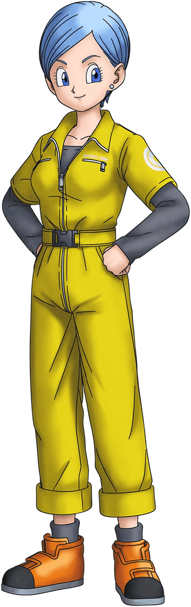

Goku

Goku es el protagonista principal de la serie Dragon Ball. Es un Saiyajin procedente del Planeta Vegeta, quien fue enviado a la Tierra cuando era un bebé con la misión de conquistar el planeta, pero debido a un golpe en la cabeza, olvidó su misión original y se convirtió en un defensor de la Tierra. Es conocido por su pureza de corazón, su fuerte sentido de la justicia y su insaciable sed de superación. A lo largo de la serie, Goku se enfrenta a numerosos enemigos poderosos y participa en torneos de artes marciales para mejorar sus habilidades.
Vegeta

Vegeta es el príncipe de la raza Saiyajin y uno de los principales rivales y aliados de Goku. Al principio de la serie, Vegeta es presentado como un antagonista que busca venganza contra Goku por derrotar a su padre, el Rey Vegeta, y destruir su planeta natal, pero con el tiempo se convierte en un aliado valioso en la lucha contra enemigos más poderosos. A pesar de su arrogancia y orgullo, Vegeta muestra un profundo sentido del honor y está dispuesto a sacrificarlo todo para proteger a su familia y al planeta Tierra.
Bulma

Bulma es una genio científico, una de las amigas más cercanas de Goku y esposa de Vegeta. Es conocida por su inteligencia, ingenio y habilidad para inventar dispositivos tecnológicos avanzados. Bulma es una figura central en la serie desde el comienzo, ya que es ella quien acompaña a Goku en su búsqueda de las legendarias Esferas del Dragón, que conceden cualquier deseo a quien las reúna. A lo largo de la serie, Bulma desempeña un papel crucial en la creación de nuevas tecnologías y en la resolución de problemas utilizando su ingenio y conocimientos científicos.